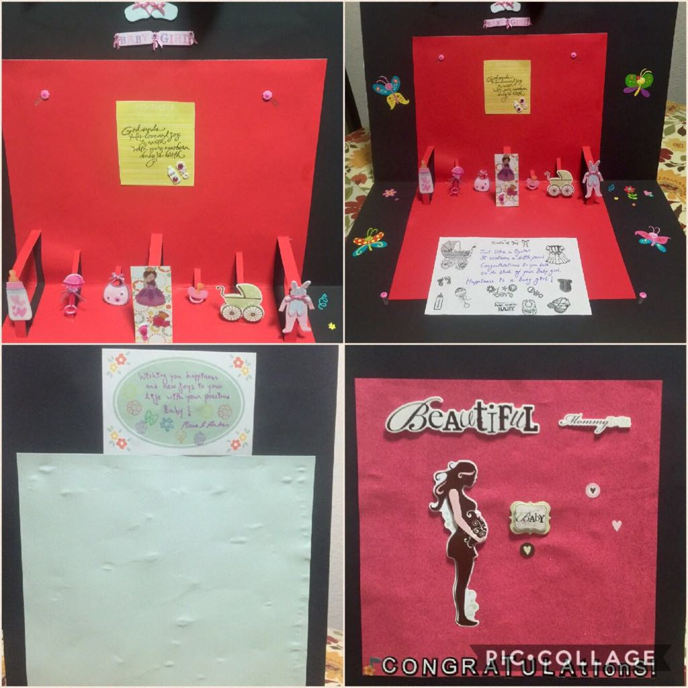
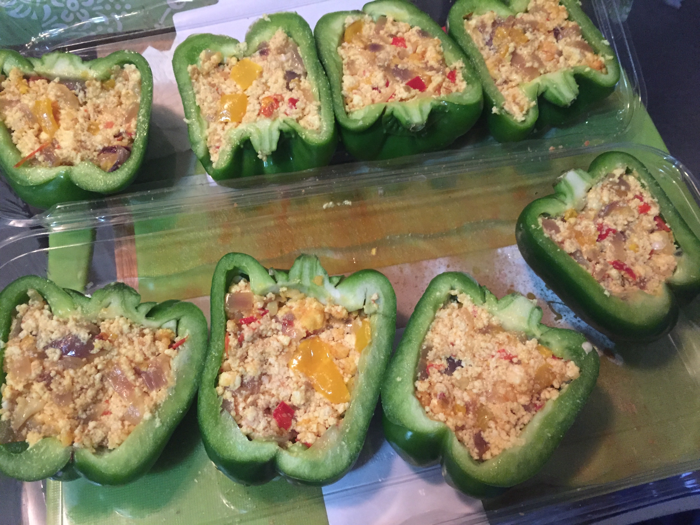

I've also done some card making and scrapbooking, and continue doing so every now and then. Someone rightly said that there's delight in the little things!

Cooking
I love food (who doesn't!) and consider myself a foodie. My love for food often compels me to cook and also experiment with new and interesting eats. I could go on about all the food and delicacies I love. But that's for some other day!

Dancing
I have loved dancing since I was a child. I am not a professional but I love and enjoy every chance of learning it.
Gardening
A few years ago I started container gardening in my apartment patio. Seeing my plants grow has been a source of happiness and pride!